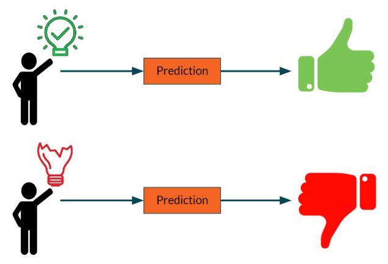

Le nouveau coronavirus, covid-19, prendra fin le 29 mai, indique un garçon indien qui avait correctement prédit qu’il commencerait il y a 8 mois.
Le 22 août 2019, sur sa chaîne YouTube conscience, Abighya Anand, 14 ans, a prédit que le monde entamerait une phase difficile de novembre 2019 à avril 2020. Cette période de 6 mois verra la propagation d’une maladie mondiale et la montée des tensions mondiales.
Au plus fort de tout, le 31 mars marquera le point culminant de cet état, le monde étant tendu.
Cependant, le 29 mai, alors que la Terre s’éloignera de cette période difficile, elle marquera le déclin de la maladie mondiale, car sa propagation sera plus facile à gérer.
Que disent les prédictions scientifiques alors?
